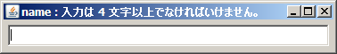
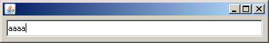

S2Swing
S2Swing
S2Swing
S2Swing
このページの内容に対応するソースコードは、s2swing-tutorialアーカイブのvalidationパッケージ以下にあります。
S2Swingには、@Requiredや@Lengthといった制約アノテーションが用意されています。 モデルクラスのプロパティにこれらのアノテーションを付加することで、アプリケーションにバリデーション機構を簡単に組み込むことができます。
S2Swingでは、基本的に次のような流れでバリデーションを記述します。
上記の流れを具体的に見ていきましょう。ここでは、テキストフィールドに4文字以上のユーザ名を入力させる場面を考えてみます。 まず、ユーザ情報を示すUserクラスを作成します。ユーザ名を示すnameプロパティに、@Lengthアノテーションを使って制約を指定します。
package validation;
import java.io.Serializable;
import org.seasar.swing.validator.annotation.Length;
public class User implements Serializable {
private static final long serialVersionUID = 1L;
@Length(min = 4)
private String name;
public String getName() {
return name;
}
public void setName(String name) {
this.name = name;
}
}
@Length(min = 4)として、nameプロパティが4文字以上でなければならないことを指示しています。 なお、アノテーションの位置は、フィールド、getter、setterのいずれでも認識されます。
次に、ユーザ名の入力画面となるValidationUsageFrameクラスを作りましょう。
package validation;
import java.awt.Container;
import java.awt.Dimension;
import java.awt.FlowLayout;
import javax.swing.JTextField;
import org.seasar.swing.beans.ObservableBeans;
import org.seasar.swing.binding.Binder;
import org.seasar.swing.binding.BindingStateEvent;
import org.seasar.swing.binding.BindingStateListener;
import org.seasar.swing.component.S2Frame;
public class ValidationUsageFrame extends S2Frame {
private static final long serialVersionUID = 1L;
private JTextField textField = new JTextField();
private User user;
public void initialize() {
setDefaultCloseOperation(EXIT_ON_CLOSE);
textField.setPreferredSize(new Dimension(360, 24));
Container c = getContentPane();
c.setLayout(new FlowLayout());
c.add(textField);
user = ObservableBeans.create(User.class);
Binder binder = new Binder();
binder.add(user, "name", textField, "text");
binder.addBindingStateListener(new BindingStateListener() {
public void bindingStateChanged(BindingStateEvent e) {
setTitle(e.getSimpleErrorMessage());
}
});
binder.bind();
}
}
このコードのように、バリデーションは通常、バインディングとセットで行われます。
バインディングのターゲットオブジェクト（ここではtextFieldコンポーネント）のプロパティが変更されると、ただちにバリデーションが行われます。 バリデーションが成功すれば、ターゲット値がソースプロパティ（ここではuser.name）に代入されます。バリデーションが失敗した場合、ソースプロパティは変更されません。 このバリデーションの結果は、BindingStateEvent型のイベントとしてリスナーへ通知されます。
34行目では、Binder#addBindingStateListener()を呼び出して、BindingStateEventのイベントハンドラを記述しています。 ハンドラの内容は、エラーメッセージをフレームのタイトルに設定するという単純なものです。
それでは、アプリケーションを実行してみましょう。初期状態で、フレームのタイトルが「name : 入力は4文字以上でなければいけません。」となっていますね。

テキストフィールドに文字を入力して、フレームタイトルがどう変化するか観察してみてください。 入力が4文字以上に達したとき、エラーメッセージが消えることが確認できます。
